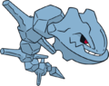

Nome: Jasmine
Insígnia: Mineral
Cidade: Olivine
Biografia:
A cidade portuária de Olivine foi o principal canal de comunicação com o leste. Por outro lado, essa foi a última cidade a receber um ginásio. Por ser recente, restou a especialização em um tipo descoberto no início deste século, os Pokémon metálicos.
Jasmine é a quinta a adotar a insígnia Mineral de líder, tendo um gigantesco Steelix como sua obra-prima. Mesmo depois de tornar-se cabeça de ginásio, a garota não deixou de lado sua antiga paixão: cuidar do farol da antiga cidade, em cujo topo encontra-se sua Ampharos, responsável por guiar os barcos em segurança pelo oceano. Ela costuma sempre estar cuidando do Ampharos quando não está em seu ginásio.
Pokémon:
